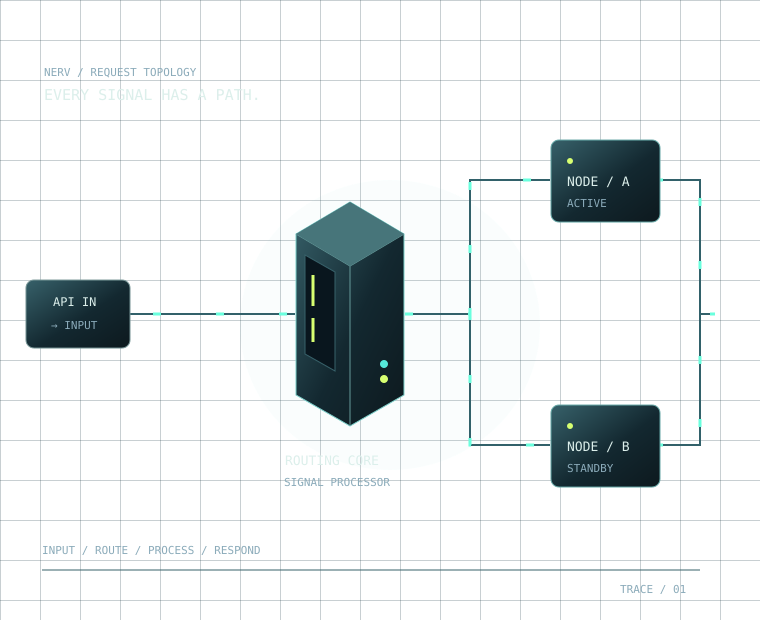

Поднимите поток.
При росте нагрузки увеличиваются задержка и очередь. График сохраняет историю, а не рисует случайную волну.
СИГНАЛ СРЕДИ ШУМА / 001
Один запрос проходит через десятки решений. Посмотрите, где возникает задержка и что меняется при отказе узла.
Не видеоролик. Управляемая модель, которую можно сломать и восстановить.

НЕ ПРОСТО КРАСИВАЯ СХЕМА
При росте нагрузки увеличиваются задержка и очередь. График сохраняет историю, а не рисует случайную волну.
Запросы уходят на оставшийся узел. Его ёмкости может не хватить. В журнале появляется событие отказа.
Возвращается доступная ёмкость, очередь постепенно разгружается. Сравните результат с началом опыта.
ТРИ МИНУТЫ ВМЕСТО ДЕСЯТИ СКРИНШОТОВ
Консоль открывается без регистрации. Данные вымышлены; внешние сервисы и настоящая инфраструктура не подключены.